المعالم السياحية في القاهرة
برج القاهرة

وسط قلب القاهرة، وعلى جزيرة الزمالك المطلة على نهر النيل، يقف برج القاهرة كواحد من أشهر المعالم السياحية في مصر والعالم العربي. هذا البرج ليس مجرد مبنى مرتفع، بل رمز للفخر المصري، وشاهد على تاريخ طويل من الجمال والتحدي والإبداع الهندسي. تم افتتاح برج القاهرة عام 1961، ويصل ارتفاعه إلى حوالي 187 مترًا، ليظل لسنوات طويلة أعلى مبنى في إفريقيا. صُمم البرج على شكل زهرة اللوتس، وهي الزهرة التي عُرفت في الحضارة المصرية القديمة كرمز للجمال والنقاء والحياة. وعندما ينظر الزائر إلى البرج من بعيد، يلاحظ التصميم الفريد الذي يجمع بين الحداثة وروح التاريخ المصري القديم. يتميز برج القاهرة بإطلالة ساحرة تخطف الأنفاس، حيث يمكن للزوار مشاهدة القاهرة كاملة من الأعلى. من فوق البرج تظهر معالم المدينة العملاقة مثل نهر النيل، والأهرامات، وقلعة صلاح الدين، وأحياء القاهرة المختلفة في مشهد بانورامي مذهل، خاصة وقت غروب الشمس أو أثناء الليل عندما تضيء المدينة بأنوارها الجميلة.
المسجد الأزهر الشريف
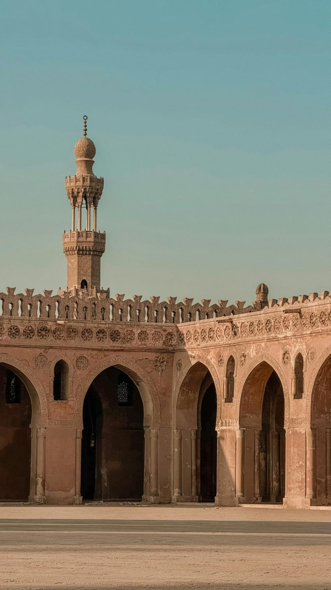
يُعد مسجد الأزهر الشريف واحدًا من أعظم وأشهر المساجد الإسلامية في العالم، فهو ليس مجرد مكان للصلاة فقط، بل منارة علمية ودينية أثرت الحضارة الإسلامية لقرون طويلة. يقع المسجد في قلب القاهرة التاريخية، ويتميز بمكانته الكبيرة لدى المسلمين في مختلف أنحاء العالم. تم تأسيس الجامع الأزهر عام 970 ميلاديًا على يد القائد جوهر الصقلي خلال العصر الفاطمي، ليصبح بعد ذلك مركزًا لنشر العلوم الدينية واللغة العربية والفقه الإسلامي. ومع مرور الزمن تحول الأزهر إلى جامعة إسلامية عريقة تُعتبر من أقدم الجامعات في العالم، وما زالت حتى اليوم تستقبل الطلاب من عشرات الدول للدراسة والتعلم. ويتميز مسجد الأزهر بتصميمه المعماري الإسلامي الرائع، حيث تظهر فيه روعة الفن الإسلامي من خلال المآذن العالية، والزخارف الدقيقة، والأقواس الجميلة، والساحات الواسعة التي تمنح الزائر شعورًا بالهدوء والسكينة.
باب زويلة
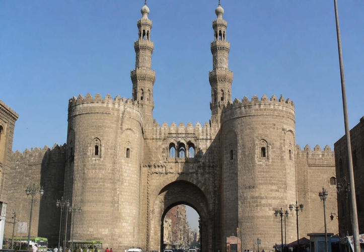
يُعد باب زويلة واحدًا من أهم وأشهر الأبواب التاريخية في مدينة القاهرة، وهو من الآثار الباقية من أسوار القاهرة الفاطمية القديمة. ويتميز الباب بقيمته التاريخية والمعمارية الكبيرة، حيث كان يُستخدم قديمًا كمدخل رئيسي للمدينة ومكانًا لحماية القاهرة من الغزاة. يقع باب زويلة في منطقة الجمالية بالقاهرة التاريخية، وهي منطقة مليئة بالآثار الإسلامية والأسواق الشعبية القديمة التي تعكس روح القاهرة القديمة. تم بناء الباب في العصر الفاطمي في القرن الحادي عشر الميلادي، وكان يُعد أحد الأبواب الثلاثة الرئيسية لمدينة القاهرة في ذلك الوقت. وقد سُمّي بهذا الاسم نسبة إلى قبيلة “زويلة” التي كانت تسكن المنطقة. ويتميز باب زويلة بتصميمه المعماري الإسلامي الرائع، حيث يحتوي على برجين ضخمين من الحجر، وفتحة كبيرة في المنتصف كانت تمر منها العربات والجنود. كما كان يستخدم قديمًا كمنصة لإعلان القرارات المهمة .
قلعة صلاح الدين الأيوبي

تُعد قلعة صلاح الدين الأيوبي واحدة من أعظم القلاع التاريخية في مصر والعالم الإسلامي، فهي رمز للقوة والعظمة والتاريخ العريق. تقع القلعة فوق جبل المقطم في القاهرة، مما يمنحها موقعًا استراتيجيًا رائعًا يطل على المدينة بالكامل، ولذلك كانت لقرون طويلة مركزًا للحكم والدفاع عن مصر. بدأ القائد العظيم صلاح الدين الأيوبي بناء القلعة عام 1176 ميلاديًا بهدف حماية القاهرة من هجمات الصليبيين، حيث أراد إنشاء حصن قوي يحمي البلاد ويؤمّنها ضد أي خطر خارجي. وقد استمر العمل في القلعة خلال عصور مختلفة، وأضاف إليها الحكام العديد من المباني والأسوار والأبراج حتى أصبحت واحدة من أهم المعالم التاريخية في مصر. وتتميز القلعة بتصميمها العسكري القوي، حيث تضم أسوارًا ضخمة وأبراج مراقبة عالية وبوابات حصينة كانت تستخدم لحماية المدينة.
المعالم السياحية في الإسكندرية
قلعة قايتباي
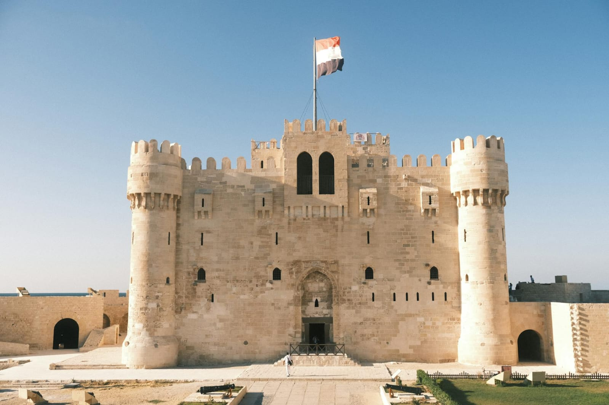
تُعد قلعة قايتباي من أبرز المعالم التاريخية في مدينة الإسكندرية، وتقع على ساحل البحر المتوسط في موقع مميز عند مدخل الميناء الشرقي. بُنيت القلعة في القرن الخامس عشر الميلادي على يد السلطان الأشرف قايتباي، وذلك لحماية سواحل مصر من الغزوات البحرية. وقد أُقيمت القلعة في نفس موقع منارة الإسكندرية القديمة، التي كانت تُعد واحدة من عجائب الدنيا السبع في العالم القديم. تتميز القلعة بتصميمها المعماري الإسلامي القوي، حيث تضم أبراجًا وأسوارًا سميكة، وتوفر إطلالة رائعة على البحر. عند زيارتها، يمكن للزائر استكشاف الغرف والممرات الداخلية، والتعرف على تاريخها العسكري، بالإضافة إلى الاستمتاع بالمناظر الخلابة المحيطة بها. تُعتبر قلعة قايتباي اليوم وجهة سياحية مهمة تجمع بين عبق التاريخ وجمال الطبيعة، وتجذب الزوار الراغبين في التعرف على التراث المصري والاستمتاع بأجواء البحر.
المسرح الروماني
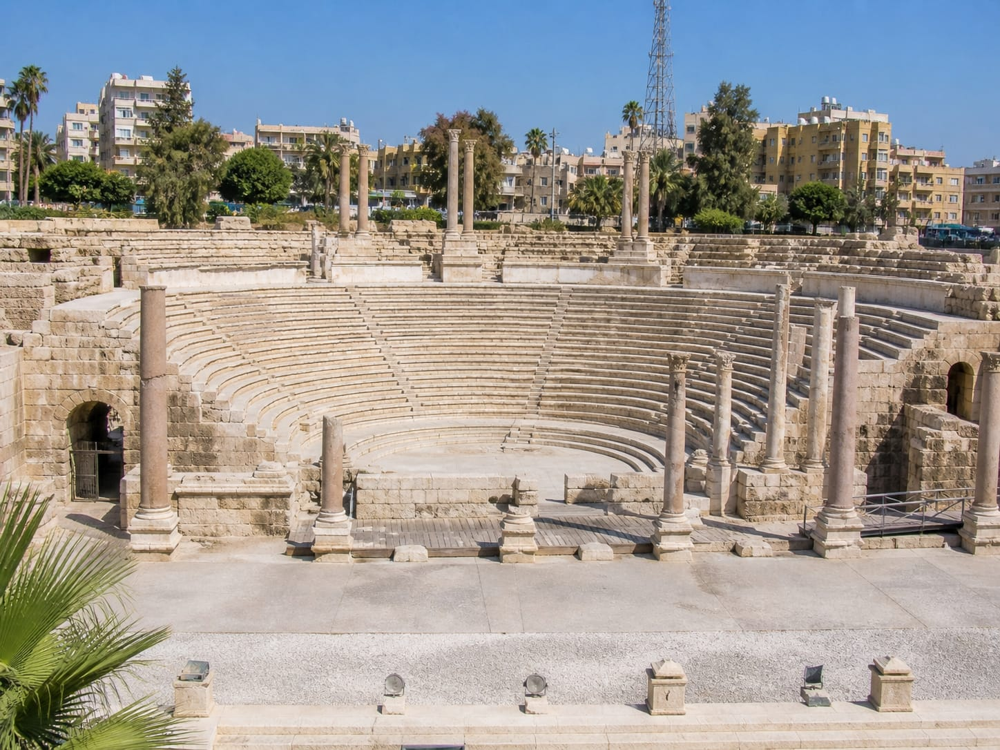
يُعد المسرح الروماني من أبرز المعالم الأثرية في مدينة الإسكندرية، ويقع في منطقة كوم الدكة بوسط المدينة. يرجع تاريخ هذا المسرح إلى العصر الروماني، ويُعتقد أنه بُني في القرن الرابع الميلادي. يتميز بتصميمه نصف الدائري الذي يضم عدة صفوف من المقاعد المصنوعة من الرخام، والتي كانت تُستخدم لاستقبال الجمهور خلال العروض الفنية والمناسبات المختلفة. كما يحتوي الموقع على بقايا أعمدة وتماثيل وقاعات أثرية، مما يعكس مدى تطور العمارة والفنون في تلك الفترة. ويُعتقد أن المسرح لم يكن مخصصًا للعروض فقط، بل كان يُستخدم أيضًا كقاعة للمحاضرات أو الاجتماعات. زيارة المسرح الروماني تمنحك فرصة للتعرف على جزء مهم من تاريخ الإسكندرية في العصر الروماني، والاستمتاع بأجواء أثرية مميزة تجمع بين الفن والتاريخ في مكان واحد.
مكتبة الإسكندرية
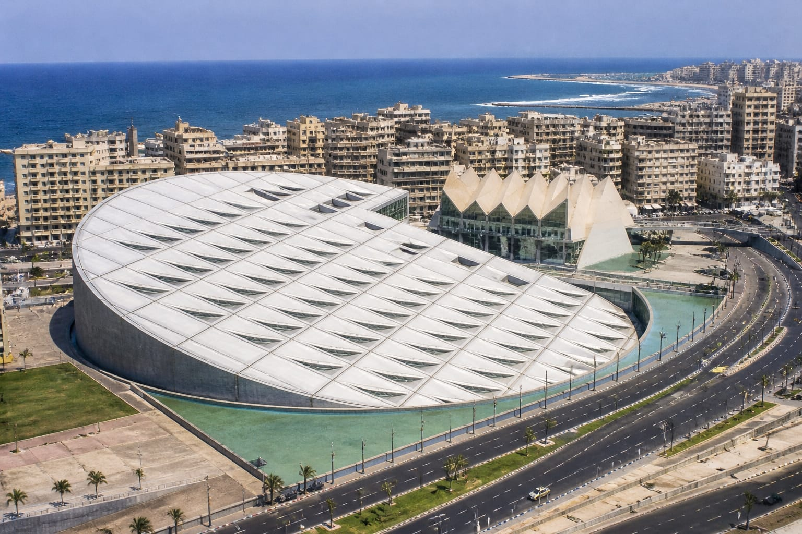
تُعد مكتبة الإسكندرية واحدة من أهم الصروح الثقافية في مصر والعالم، وتقع في مدينة الإسكندرية على ساحل البحر المتوسط. جاء إنشاء المكتبة الحديثة إحياءً لذكرى مكتبة الإسكندرية القديمة التي كانت من أعظم مراكز العلم والمعرفة في التاريخ القديم. وقد افتُتحت المكتبة الجديدة عام 2002، لتصبح مركزًا عالميًا للثقافة والبحث العلمي. تتميز المكتبة بتصميم معماري فريد على شكل قرص مائل يشبه شروق الشمس، ويرمز إلى النور والمعرفة. تضم ملايين الكتب في مختلف المجالات واللغات، بالإضافة إلى عدد من المتاحف وقاعات العرض والمعارض الفنية، ومراكز بحثية متخصصة. كما تُنظم المكتبة العديد من الفعاليات الثقافية مثل الندوات والمؤتمرات والمعارض، مما يجعلها ملتقى للمفكرين والباحثين من مختلف أنحاء العالم. زيارة مكتبة الإسكندرية ليست مجرد زيارة لمكان، بل هي تجربة ثقافية مميزة تجمع بين التاريخ والحاضر، وتمنح الزائر فرصة لاستكشاف عالم واسع من المعرفة.
عمود السواري
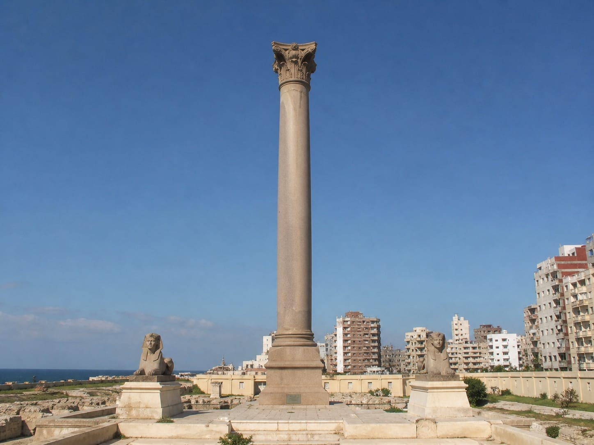
يُعد عمود السواري من أشهر المعالم الأثرية في مدينة الإسكندرية، ويقع في منطقة كرموز بالقرب من هضبة كوم الشقافة. يرجع تاريخ العمود إلى العصر الروماني، وقد أُقيم تكريمًا للإمبراطور دقلديانوس في أواخر القرن الثالث الميلادي. ويُعد هذا العمود أكبر عمود تذكاري من نوعه في مصر، حيث يبلغ ارتفاعه حوالي 27 مترًا، وهو مصنوع من الجرانيت الأحمر. ورغم اسمه، لا علاقة للعمود بالقائد بومبي كما كان يُعتقد قديمًا، حيث جاء الاسم نتيجة خطأ شائع لدى الأوروبيين في العصور الوسطى. يحيط بالعمود عدد من الآثار المهمة، مثل بقايا معبد السيرابيوم وتماثيل أبي الهول، مما يجعل المنطقة موقعًا أثريًا مميزًا يجذب الزوار ومحبي التاريخ. يمثل عمود السواري شاهدًا على عظمة الحضارة الرومانية في الإسكندرية، ويُعد من الأماكن التي تجمع بين التاريخ والهيبة المعمارية في موقع واحد.
المعالم السياحية في البحر الأحمر
جبال البحر الأحمر

جبال البحر الأحمر تُعد من أبرز المعالم الطبيعية في مصر، حيث تمتد على طول الساحل الغربي للبحر الأحمر، وتشكل خلفية مميزة للشواطئ الساحلية. تتميز هذه الجبال بتكويناتها الصخرية القديمة، وتنوع ألوانها بين البني والأحمر والرمادي، مما يمنحها مظهرًا فريدًا خاصة وقت شروق وغروب الشمس. تُعتبر هذه الجبال من أقدم التكوينات الجيولوجية في المنطقة، وتحتوي على ثروات طبيعية ومعادن مختلفة. كما أنها موطن للعديد من الكائنات الصحراوية مثل الغزلان والوعول، إضافة إلى بعض النباتات التي تتحمل الظروف القاسية. وتجذب جبال البحر الأحمر محبي المغامرة والرحلات، حيث يمكن ممارسة أنشطة مثل التسلق، والتخييم، والسفاري، واستكشاف الوديان والمسارات الجبلية. كما تمنح الزائر فرصة للاستمتاع بالهدوء والطبيعة البكر بعيدًا عن صخب المدن. تجمع جبال البحر الأحمر بين الجمال الطبيعي والتاريخ الجيولوجي، مما يجعلها وجهة مميزة لكل من يبحث عن تجربة مختلفة تجمع بين الاستكشاف والاسترخاء.
محمية رأس محمد

تُعد محمية رأس محمد واحدة من أشهر وأجمل المحميات الطبيعية في مصر، وتقع عند التقاء خليج السويس بخليج العقبة في جنوب شبه جزيرة سيناء، بالقرب من مدينة شرم الشيخ. تتميز المحمية بتنوع بيئي فريد، حيث تضم شعابًا مرجانية من الأجمل في العالم، وتعيش بها مئات الأنواع من الأسماك والكائنات البحرية الملونة، مما يجعلها وجهة مثالية لعشاق الغوص والسنوركلينج. كما تتميز بمياهها الصافية التي تكشف تفاصيل الحياة البحرية بشكل مذهل. لا تقتصر روعة المحمية على البحر فقط، بل تضم أيضًا بيئات صحراوية وجبالًا وتكوينات صخرية مميزة، بالإضافة إلى أماكن مثل بحيرة “المياه المسحورة” التي تشتهر بملوحتها العالية، وأشجار المانجروف التي تنمو في المياه المالحة. تُعد محمية رأس محمد مكانًا مثاليًا لمحبي الطبيعة والاستكشاف، حيث يمكن الاستمتاع بالمناظر الخلابة، ومراقبة الطيور المهاجرة، والتقاط الصور في بيئة طبيعية نادرة تجمع بين جمال البحر وسحر الصحراء.
جبل موسي
يُعد جبل موسى من أشهر المعالم الدينية والسياحية في مصر، ويقع في جنوب شبه جزيرة سيناء بالقرب من دير سانت كاترين. يرتبط الجبل بقصة دينية عظيمة، حيث يُعتقد أنه المكان الذي كلّم الله فيه النبي موسى وتلقى الوصايا العشر، لذلك يُعتبر موقعًا مقدسًا لدى الديانات السماوية. يبلغ ارتفاع الجبل حوالي 2285 مترًا فوق سطح البحر، ويقصده الزوار من مختلف أنحاء العالم لصعوده، خاصة في رحلة ليلية تنتهي بمشاهدة شروق الشمس من القمة، وهو مشهد مميز يجذب الكثير من السائحين. يمكن الصعود عبر طريقين: طريق الدرج (درجات التوبة) وهو أكثر صعوبة، أو الطريق الممهد الذي يُستخدم أيضًا بالجمال. يحيط بالجبل طبيعة جبلية خلابة، وتُعد الرحلة إليه تجربة تجمع بين المغامرة والروحانية، حيث يستمتع الزائر بالهدوء والسكينة وسط المناظر الطبيعية الفريدة.
الشواطئ السياحية

شواطئ البحر الأحمر من أجمل الوجهات السياحية في مصر، حيث المياه الصافية ذات اللون الفيروزي والرمال الناعمة التي تمنح إحساسًا بالراحة والهدوء. تتميز هذه الشواطئ بوجود شعاب مرجانية رائعة تجعلها مكانًا مثاليًا لمحبي الغوص والسنوركلينج، حيث يمكن مشاهدة أنواع مختلفة من الأسماك الملونة والكائنات البحرية النادرة. تمتد سواحل البحر الأحمر عبر مدن سياحية شهيرة مثل الغردقة وشرم الشيخ ومرسى علم، وكل مدينة لها طابعها الخاص، لكنها جميعًا تشترك في جمال الطبيعة ونقاء الجو. توفر هذه المناطق العديد من الأنشطة الترفيهية مثل ركوب القوارب، والرحلات البحرية، والرياضات المائية، بالإضافة إلى أماكن مميزة للاسترخاء والاستمتاع بالشمس. سواء كنت تبحث عن المغامرة أو الهدوء، فإن شواطئ البحر الأحمر تقدم تجربة متكاملة تجمع بين الجمال الطبيعي والترفيه، مما يجعلها وجهة مثالية لقضاء عطلة لا تُنسى.
المعالم السياحية في الجيزة
أهرامات الجيزة
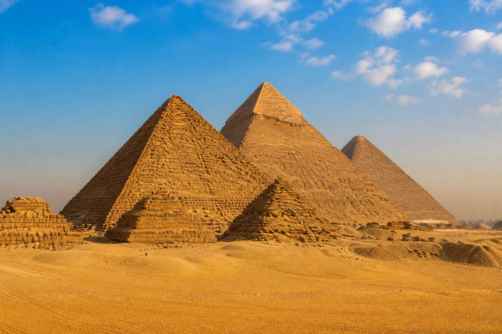
تُعد أهرامات الجيزة من أعظم وأشهر المعالم الأثرية في العالم، وتقع في محافظة الجيزة بالقرب من القاهرة. تضم المنطقة ثلاثة أهرامات رئيسية: هرم خوفو، وهو الأكبر والأقدم، وهرم خفرع، وهرم منقرع، وقد بُنيت هذه الأهرامات خلال عصر الدولة القديمة قبل أكثر من 4500 عام، لتكون مقابر لملوك الفراعنة. يُعتبر هرم خوفو أحد عجائب الدنيا السبع القديمة، وهو الوحيد الذي ما زال قائمًا حتى اليوم، مما يعكس دقة الهندسة المصرية القديمة وقدرتهم المذهلة على البناء. وبالقرب من الأهرامات يقع تمثال أبو الهول، الذي يتميز بجسم أسد ورأس إنسان، ويُعد رمزًا للقوة والحكمة في الحضارة المصرية القديمة. تجذب أهرامات الجيزة ملايين الزوار سنويًا من مختلف أنحاء العالم، حيث يمكنهم استكشاف التاريخ العريق، والتقاط الصور، والاستمتاع بجمال هذا الموقع الذي يجمع بين عظمة الماضي وروعة الحاضر.
تمثال أبو الهول

يُعد أبو الهول واحدًا من أشهر التماثيل الأثرية في العالم، ويقع في منطقة أهرامات الجيزة بالقرب من القاهرة. يعود تاريخ تمثال أبو الهول إلى عصر الدولة القديمة في مصر الفرعونية، ويُعتقد أنه نُحت في عهد الملك خفرع. يتميز التمثال بجسم أسد ورأس إنسان، وهو رمز للقوة والحكمة في الحضارة المصرية القديمة. يُعد أبو الهول من أكبر التماثيل الحجرية في العالم، حيث يبلغ طوله حوالي 73 مترًا وارتفاعه نحو 20 مترًا، وقد نُحت من كتلة واحدة من الحجر الجيري. ورغم مرور آلاف السنين، ما زال أبو الهول محافظًا على هيبته وغموضه، ويجذب ملايين الزوار سنويًا للاستمتاع بمشاهدته والتقاط الصور بجواره، باعتباره أحد أهم رموز الحضارة المصرية القديمة.
هرم سقارة المدرج
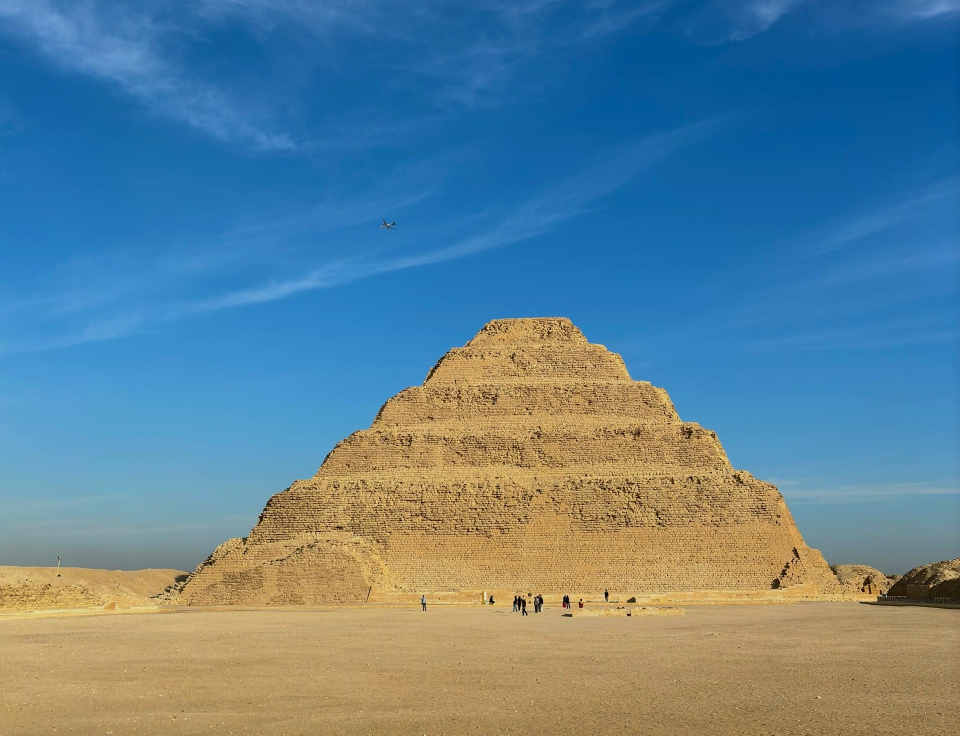
يُعد هرم سقارة المدرج من أقدم وأهم المعالم الأثرية في مصر، ويقع في منطقة سقارة الأثرية جنوب الجيزة بالقرب من القاهرة. بُني هذا الهرم في عهد الملك زوسر من الأسرة الثالثة في الدولة القديمة، ويُنسب تصميمه إلى المهندس العبقري إمحوتب، ويُعتبر أول بناء حجري ضخم في التاريخ الفرعوني، مما جعله بداية تطور فكرة الأهرامات في مصر القديمة. يتميز الهرم بتصميمه المدرج المكون من ست درجات تتناقص في الحجم كلما ارتفعنا إلى الأعلى، على عكس الأهرامات التقليدية ذات الشكل الأملس. وكان الهدف منه أن يكون مقبرة ملكية تعكس مكانة الملك وهيبته. تُحيط بالهرم منطقة أثرية كبيرة تضم مقابر ومعابد ونقوشًا فرعونية تعكس الحياة الدينية والثقافية في ذلك العصر، مما يجعل سقارة متحفًا مفتوحًا للتاريخ المصري القديم. زيارة هرم سقارة المدرج تمنحك فرصة فريدة لاكتشاف بداية العمارة الحجرية في العالم، وفهم تطور الحضارة المصرية عبر آلاف السنين.
المتحف المصري الكبير
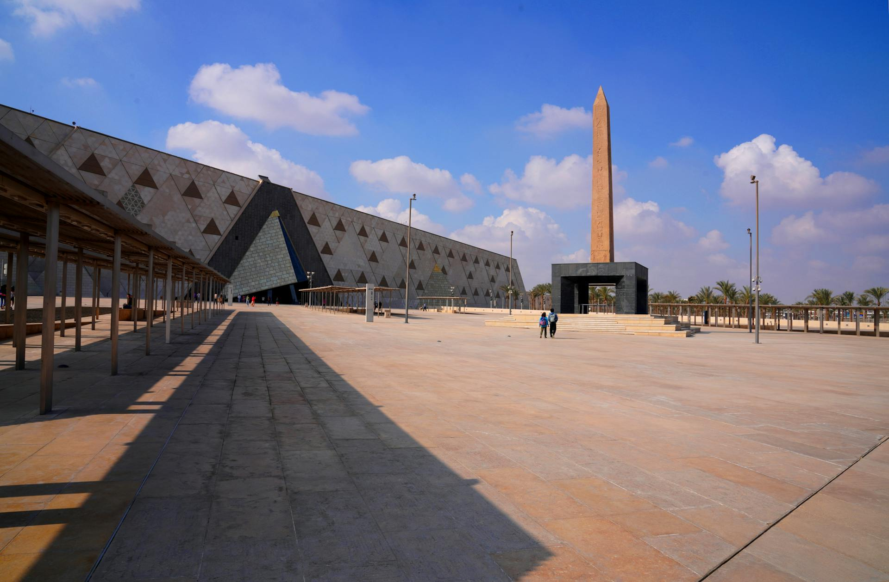
يُعد المتحف المصري الكبير واحدًا من أهم وأضخم المشاريع الثقافية في العالم، ويقع بالقرب من منطقة أهرامات الجيزة عند مشارف القاهرة. يهدف المتحف إلى عرض تاريخ الحضارة المصرية القديمة بشكل حديث ومتكامل، حيث يضم آلاف القطع الأثرية التي تغطي مختلف العصور الفرعونية، من بينها كنوز الملك توت عنخ آمون التي تُعرض كاملة لأول مرة في مكان واحد. يتميز المتحف بتصميم معماري حديث يطل على الأهرامات، ويجمع بين التكنولوجيا المتطورة وطرق العرض التفاعلية، مما يوفر تجربة فريدة للزوار تجمع بين التعليم والمتعة. كما يحتوي على قاعات عرض ضخمة، ومناطق للبحث العلمي والترميم، بالإضافة إلى مساحات ثقافية وتعليمية تهدف إلى نشر الوعي بتاريخ مصر العريق. يُعتبر المتحف المصري الكبير إضافة عالمية مهمة، ووجهة سياحية وثقافية رئيسية تعكس عظمة الحضارة المصرية وتاريخها الممتد عبر آلاف السنين.
المعالم السياحية في الفيوم
الشلالات
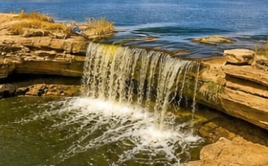
تُعد شلالات الفيوم من أجمل الوجهات الطبيعية في مصر، وتقع داخل منطقة وادي الريان في محافظة الفيوم. تُعتبر هذه الشلالات هي الوحيدة من نوعها في مصر، وقد تشكلت نتيجة تصريف مياه البحيرات داخل وادي الريان، مما أدى إلى تكوين شلالات طبيعية بين البحيرتين العلوية والسفلية. تتميز المنطقة بجمال طبيعي هادئ يجمع بين المياه المتدفقة والصحراء المحيطة والتكوينات الجبلية، مما يجعلها مكانًا مثاليًا لمحبي الاسترخاء والتصوير والرحلات الطبيعية. كما يمكن للزوار الاستمتاع بعدة أنشطة مثل ركوب القوارب، والتخييم، والسفاري في الصحراء، بالإضافة إلى مشاهدة الطيور والكائنات البرية في بيئتها الطبيعية. شلالات الفيوم تمثل تجربة مختلفة تمامًا داخل مصر، لأنها تجمع بين الطبيعة الصحراوية والمياه الجارية في مشهد نادر وجذاب.
وادي الحيتان
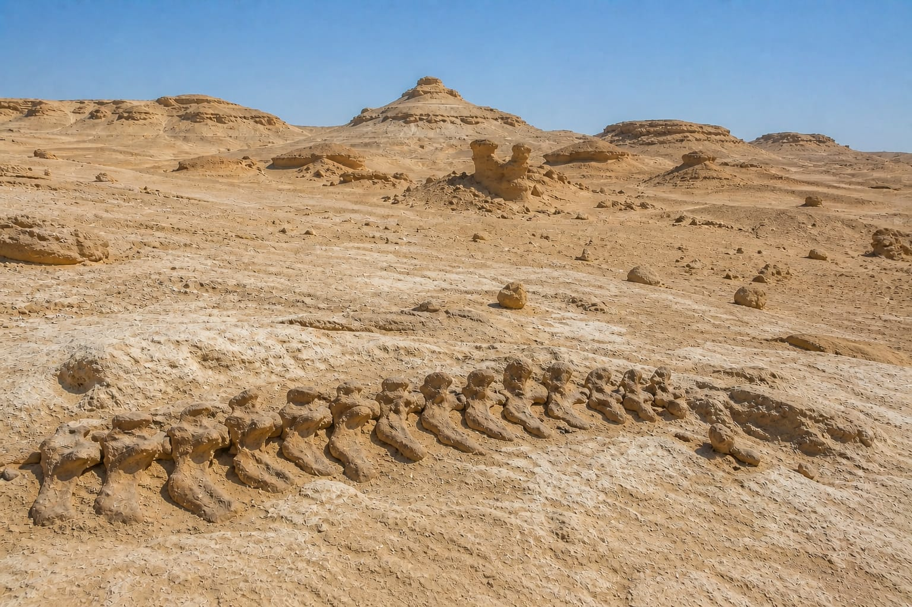
يُعد وادي الحيتان من أهم المواقع الطبيعية والأثرية في مصر، ويقع داخل محمية وادي الريان بمحافظة الفيوم. يتميز هذا الوادي بأنه متحف طبيعي مفتوح يحكي قصة تطور الحياة على الأرض، حيث يحتوي على بقايا متحجرة لحيتان عملاقة عاشت في المنطقة منذ ملايين السنين عندما كانت مغطاة بالمياه. تم اكتشاف هياكل عظمية كاملة تقريبًا لحيتان قديمة، بالإضافة إلى حفريات لكائنات بحرية أخرى، مما جعله موقعًا علميًا مهمًا لفهم تطور الثدييات البحرية. وقد تم إدراجه ضمن قائمة التراث العالمي لليونسكو. إلى جانب القيمة العلمية، يتميز وادي الحيتان بجمال طبيعي فريد يجمع بين الصحراء الهادئة والتكوينات الصخرية المدهشة، مما يجعله وجهة مميزة لمحبي المغامرة والتصوير والسياحة البيئية. زيارة وادي الحيتان تمنحك تجربة نادرة تجمع بين التاريخ الطبيعي والجمال الصحراوي في مكان واحد.
السواقي الخشبية
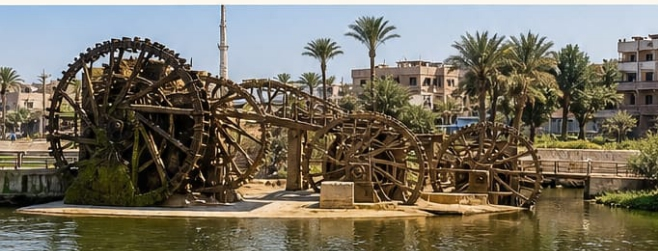
السواقي الخشبية في محافظة الفيوم تُعد من أبرز المعالم التراثية التي تميز المنطقة، وهي تمثل نموذجًا قديمًا ومبتكرًا لوسائل رفع المياه لري الأراضي الزراعية. تتكون هذه السواقي من عجلات خشبية كبيرة تدور بقوة تيار المياه في الترع أو في مجرى بحر يوسف، فتقوم برفع المياه إلى قنوات أعلى تُستخدم في ري الحقول الزراعية المحيطة. وقد ساعد هذا النظام التقليدي على دعم الزراعة في الفيوم عبر قرون طويلة. وتكمن أهميتها في أنها ما زالت موجودة حتى اليوم في بعض المناطق، مما يجعلها شاهدًا حيًا على تطور أساليب الري في مصر القديمة والحديثة. كما أصبحت جزءًا من الهوية السياحية للفيوم، حيث يقصدها الزوار للاستمتاع بمشاهدتها والتعرف على طابع الحياة الريفية هناك. وتتميز السواقي أيضًا بقيمتها الجمالية، إذ تضفي منظرًا طبيعيًا مميزًا عند دورانها وسط الخضرة والمياه، مما يجعلها من أكثر العناصر جذبًا لمحبي التصوير والسياحة البيئية.
بحيرة قارون
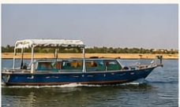
تُعد بحيرة قارون من أقدم وأشهر البحيرات الطبيعية في مصر، وتقع داخل محافظة الفيوم. تتميز البحيرة بموقعها الفريد داخل منخفض الفيوم، وهي بقايا بحيرة قديمة كانت أكبر بكثير في العصور القديمة. وتُعد اليوم من أهم المعالم الطبيعية والسياحية في المنطقة. تتميز بحيرة قارون بتنوع بيئي ملحوظ، حيث تضم أنواعًا مختلفة من الأسماك والطيور المقيمة والمهاجرة، مما يجعلها مكانًا مهمًا لمحبي مراقبة الطيور والطبيعة. كما تحيط بها مناظر صحراوية وجبلية جميلة، وتُقام بالقرب منها أنشطة سياحية مثل رحلات القوارب والتخييم والسفاري، مما يمنح الزائر تجربة تجمع بين الهدوء والطبيعة. وتُعد البحيرة أيضًا مصدرًا مهمًا للثروة السمكية في الفيوم، بالإضافة إلى قيمتها البيئية والسياحية التي تجعلها من أبرز معالم المحافظة.
المعالم السياحية في أسوان
معبد أبو سمبل
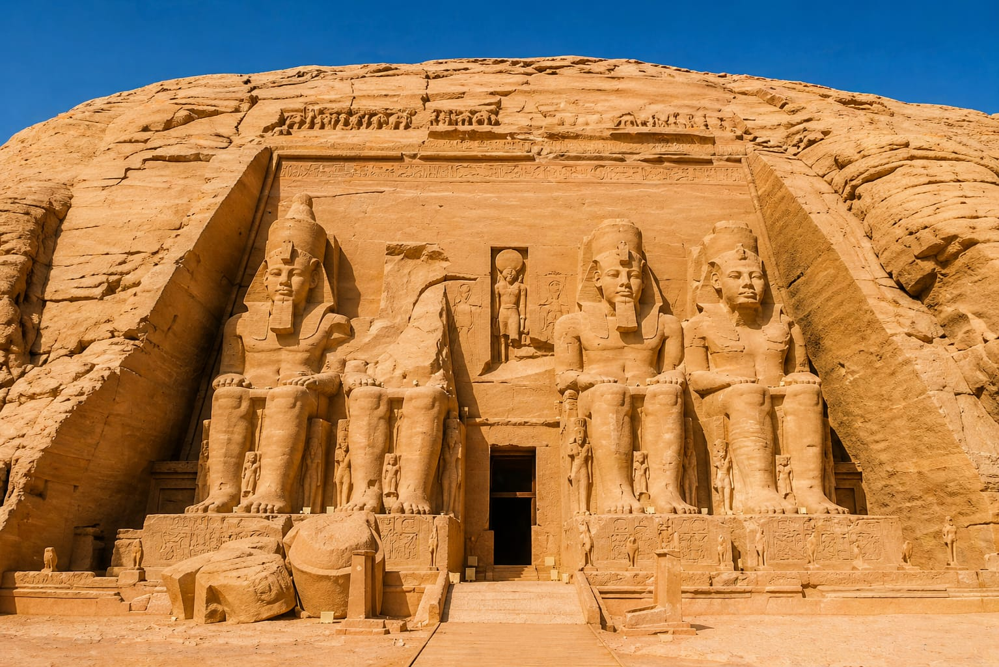
يُعد معبد أبو سمبل من أعظم المعابد الأثرية في مصر القديمة، ويقع جنوب محافظة أسوان بالقرب من الحدود المصرية السودانية. شُيّد المعبد في عهد الملك رمسيس الثاني في القرن الثالث عشر قبل الميلاد، ليكون رمزًا للقوة والانتصار، وكذلك لتخليد معركة قادش. يتكوّن الموقع من معبدين منحوتين في الصخر: المعبد الكبير المخصص لرمسيس الثاني، والمعبد الصغير المخصص لزوجته الملكة نفرتاري. ويتميز المعبد الكبير بواجهة ضخمة تتزين بأربعة تماثيل عملاقة للملك. ومن أبرز الظواهر الفريدة في أبو سمبل أن أشعة الشمس تتعامد مرتين سنويًا على قدس الأقداس داخل المعبد، في مشهد فلكي دقيق يعكس براعة المصريين القدماء في الهندسة والعلوم. كما تم نقل المعبد في ستينيات القرن العشرين إلى موقعه الحالي بعد حملة إنقاذ دولية، لحمايته من الغرق نتيجة إنشاء السد العالي، وهو ما يُعد إنجازًا هندسيًا عالميًا. ويُعتبر أبو سمبل اليوم واحدًا من أهم المقاصد السياحية في مصر والعالم، لما يجمعه من عظمة تاريخية وإبداع معماري
معبد فيلة
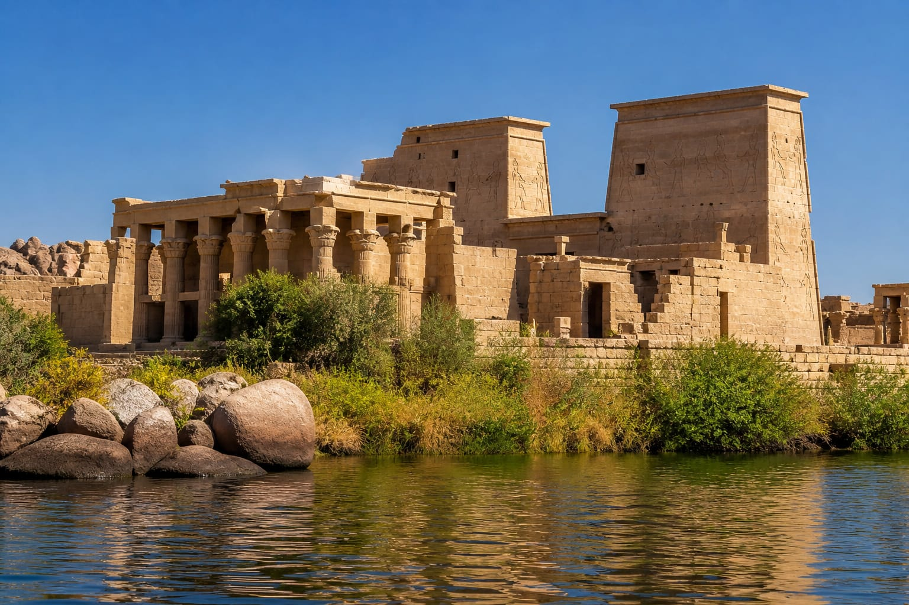
يُعد معبد فيلة من أشهر المعابد الأثرية في مصر، ويقع بالقرب من مدينة أسوان وسط نهر النيل على جزيرة جميلة محاطة بالمياه. كان المعبد مخصصًا لعبادة الإلهة إيزيس في العصر الفرعوني، ويُعتبر من أهم المراكز الدينية في مصر القديمة، حيث ارتبطت به طقوس ومعتقدات دينية استمرت لقرون طويلة. يتميز المعبد بتصميمه المعماري الفريد ونقوشه الجدارية الدقيقة التي تحكي قصصًا من الميثولوجيا المصرية القديمة، مما يجعله مصدرًا مهمًا لدراسة التاريخ والدين في تلك الفترة. وبسبب بناء السد العالي، تم نقل المعبد بالكامل من موقعه الأصلي إلى جزيرة أجيليكا ضمن مشروع دولي ضخم لحمايته من الغرق، وهو ما يُعد من أعظم عمليات إنقاذ الآثار في العالم. اليوم، يُعد معبد فيلة من أبرز الوجهات السياحية في أسوان، حيث يجمع بين الجمال الطبيعي لنهر النيل وعظمة الحضارة المصرية القديمة.
المسلة الناقصة
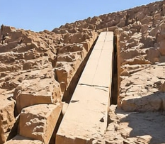
تُعد المسلة الناقصة من أهم المواقع الأثرية في مدينة أسوان، وهي واحدة من أكبر المسلات الفرعونية غير المكتملة التي ما زالت في مكانها الأصلي داخل المحاجر القديمة. يعود تاريخها إلى عهد الملكة حتشبسوت في الدولة الحديثة، وكان الهدف منها أن تكون أكبر مسلة في مصر القديمة، لكنها تُركت غير مكتملة بسبب ظهور شق كبير في الصخر أثناء نحتها. تُظهر المسلة الناقصة بوضوح الطريقة التي كان المصريون القدماء يستخدمونها في استخراج ونحت ونقل الأحجار الضخمة، مما يجعلها مصدرًا مهمًا لفهم تقنيات البناء في الحضارة الفرعونية. ويبلغ طول الجزء غير المكتمل منها نحو 41 مترًا، ولو تم الانتهاء منها لكانت أكبر مسلة تم نحتها على الإطلاق. اليوم تُعد المسلة الناقصة موقعًا سياحيًا وتعليميًا مهمًا، حيث تمنح الزائر فرصة نادرة لرؤية العمل الهندسي في صورته الأولى داخل المحجر نفسه.
السد العالي
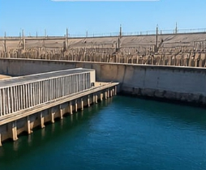
يُعد السد العالي واحدًا من أهم المشروعات الهندسية في القرن العشرين، ويقع في مدينة أسوان جنوب مصر على نهر النيل. بدأ بناء السد في ستينيات القرن الماضي بهدف تنظيم مياه نهر النيل، وحماية البلاد من الفيضانات، وتوفير مصدر ثابت للطاقة الكهربائية، إضافة إلى دعم التوسع الزراعي واستصلاح الأراضي. أدى إنشاء السد إلى تكوين بحيرة ضخمة تُعرف باسم بحيرة ناصر، وهي من أكبر البحيرات الصناعية في العالم، وتمتد جنوبًا حتى الحدود مع السودان. كما ساهم السد العالي في إحداث تحول كبير في حياة المصريين من خلال توفير الكهرباء وتثبيت منسوب المياه على مدار العام، مما دعم التنمية الاقتصادية والزراعية في البلاد. ويُعد السد العالي اليوم رمزًا للتقدم الهندسي في مصر، وأحد أبرز المعالم التي تجذب الزوار للتعرف على هذا الإنجاز الضخم في تاريخ الدولة الحديثة.
المعالم السياحية في الأقصر
وادي الملوك
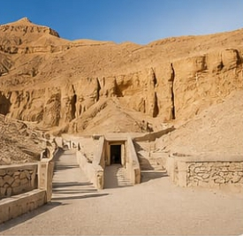
يُعد وادي الملوك من أهم المواقع الأثرية في مصر القديمة، ويقع في الضفة الغربية من نهر النيل بالقرب من مدينة الأقصر. كان هذا الوادي مخصصًا لدفن ملوك الدولة الحديثة من الفراعنة، ويضم مجموعة كبيرة من المقابر الملكية المنحوتة في الصخر، والتي تتميز بنقوشها ورسوماتها الجدارية التي تحكي تفاصيل الحياة الدينية والاعتقادات حول العالم الآخر. من أشهر المقابر الموجودة فيه مقبرة الملك توت عنخ آمون، التي اكتُشفت كاملة تقريبًا وتُعد من أهم الاكتشافات الأثرية في العالم. يتميز وادي الملوك بتصميمه الجبلي الذي ساعد المصريين القدماء على إخفاء المقابر وحمايتها من السرقة، كما يعكس مستوى متقدمًا من الفن والهندسة في تلك الفترة. ويُعد اليوم من أبرز الوجهات السياحية في مصر، حيث يقصده الزوار من مختلف أنحاء العالم لاستكشاف تاريخ الفراعنة والتعرف على أسرار الحضارة المصرية القديمة.
معبد الأقصر
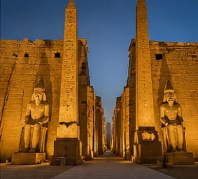
يُعد معبد الأقصر من أشهر المعابد المصرية القديمة، ويقع في قلب مدينة الأقصر على الضفة الشرقية لنهر النيل. شُيّد المعبد في عصر الدولة الحديثة، وخصوصًا في عهد الملك أمنحتب الثالث، ثم أضاف إليه لاحقًا عدد من الملوك مثل رمسيس الثاني، مما جعله معلمًا معماريًا ضخمًا يعكس تطور الفن الفرعوني. كان المعبد مخصصًا للاحتفالات الدينية، وأشهرها عيد الأوبت، الذي كانت تُنقل فيه تماثيل الآلهة في مواكب احتفالية بين معبد الأقصر ومعبد الكرنك. يتميز المعبد بمدخله الضخم الذي تزينه تماثيل رمسيس الثاني، إضافة إلى الأعمدة الضخمة والنقوش التي تحكي تفاصيل الحياة الدينية والملكية في مصر القديمة. ويُعد معبد الأقصر اليوم من أهم المعالم السياحية في مصر، حيث يجمع بين عظمة التاريخ وروعة الموقع المطل على نهر النيل، خاصة في أوقات الليل مع الإضاءة المميزة.
معبد الدير البحري
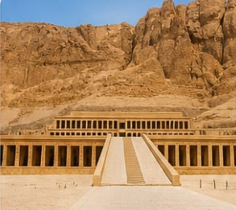
يُعد معبد الدير البحري من أهم المعابد الجنائزية في مصر القديمة، ويقع على الضفة الغربية من نهر النيل بالقرب من مدينة الأقصر. شُيّد المعبد في عهد الملكة حتشبسوت من الدولة الحديثة، ويُعد من أروع نماذج العمارة المصرية القديمة، حيث يتميز بتصميمه المتدرج الذي ينسجم مع الجبل المحيط به بشكل فريد. يتكوّن المعبد من ثلاث مصاطب رئيسية متدرجة، تتصل فيما بينها بممرات وسلالم واسعة، وتزينه نقوش بارزة تحكي إنجازات الملكة حتشبسوت، خاصة رحلتها التجارية الشهيرة إلى بلاد بونت. ويُعتبر المعبد مثالًا على الدقة الهندسية والجمال المعماري في الحضارة المصرية القديمة، كما يعكس قوة الحكم والتنظيم في تلك الفترة. اليوم، يُعد معبد الدير البحري من أبرز المعالم السياحية في الأقصر، ويجذب الزوار من مختلف أنحاء العالم لما يتمتع به من موقع طبيعي مذهل وقيمة تاريخية كبيرة.
الرحلات النهرية
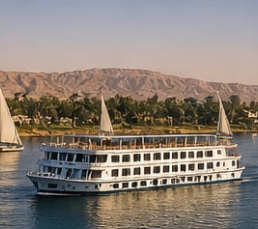
تُعد **الرحلات النهرية في نهر النيل** من أجمل التجارب السياحية في مصر، حيث تمنح الزائر فرصة فريدة للاستمتاع بجمال الطبيعة والتاريخ في وقت واحد. تتم هذه الرحلات على متن قوارب أو مراكب نيلية تقليدية أو حديثة، وتوفر إطلالات رائعة على ضفاف النيل الخضراء، والمناطق الأثرية والمدن التاريخية التي تمتد على طوله. ومن أشهر المدن التي تشتهر بالرحلات النهرية: القاهرة، والأقصر، وأسوان، حيث يمكن للزائر مشاهدة المعابد والمواقع الأثرية من منظور مختلف أثناء الإبحار. وتتنوع الرحلات بين رحلات قصيرة في المساء للاستمتاع بغروب الشمس، ورحلات طويلة تشمل الإقامة على متن مراكب سياحية عائمة، مع تقديم خدمات ترفيهية وطعام وإطلالات بانورامية على النهر. تُعد الرحلات النهرية تجربة هادئة ومميزة تجمع بين الاسترخاء والاستكشاف، وتمنح شعورًا خاصًا بجمال نهر النيل الذي يُعد شريان الحياة في مصر.